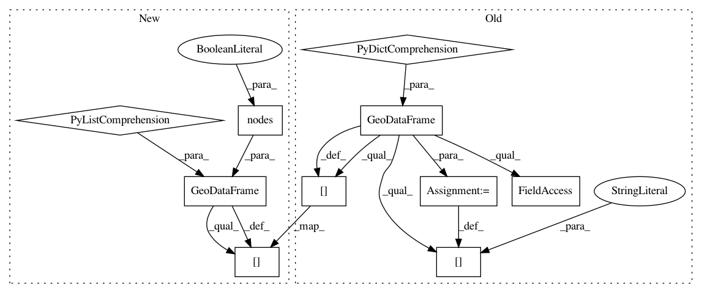

8d817e42d7ed4f7dd4a6196d963eaef20cb1c684,osmnx/save_load.py,,graph_to_gdfs,#Any#Any#Any#Any#Any#,502
Before Change
start_time = time.time()
nodes = {node:data for node, data in G.nodes(data=True)}
gdf_nodes = gpd.GeoDataFrame(nodes).T
if node_geometry:
gdf_nodes["geometry"] = gdf_nodes.apply(lambda row: Point(row["x"], row["y"]), axis=1)
gdf_nodes.crs = G.graph["crs"]
gdf_nodes.gdf_name = "{}_nodes".format(G.graph["name"])
gdf_nodes["osmid"] = gdf_nodes["osmid"].astype(np.int64).map(make_str)
to_return.append(gdf_nodes)
log("Created GeoDataFrame "{}" from graph in {:,.2f} seconds".format(gdf_nodes.gdf_name, time.time()-start_time))
After Change
start_time = time.time()
nodes_data = [data for _, data in G.nodes(data=True)]
gdf_nodes = gpd.GeoDataFrame(nodes_data, index=G.nodes(data=False))
if node_geometry:
gdf_nodes["geometry"] = gdf_nodes.apply(lambda row: Point(row["x"], row["y"]), axis=1)
gdf_nodes.crs = G.graph["crs"]
gdf_nodes.gdf_name = "{}_nodes".format(G.graph["name"])
In pattern: SUPERPATTERN
Frequency: 3
Non-data size: 10
Instances
Project Name: gboeing/osmnx
Commit Name: 8d817e42d7ed4f7dd4a6196d963eaef20cb1c684
Time: 2018-12-30
Author: jonas.klasen@moia.io
File Name: osmnx/save_load.py
Class Name:
Method Name: graph_to_gdfs
Project Name: gboeing/osmnx
Commit Name: 8d817e42d7ed4f7dd4a6196d963eaef20cb1c684
Time: 2018-12-30
Author: jonas.klasen@moia.io
File Name: osmnx/save_load.py
Class Name:
Method Name: save_graph_shapefile
Project Name: gboeing/osmnx
Commit Name: 8d817e42d7ed4f7dd4a6196d963eaef20cb1c684
Time: 2018-12-30
Author: jonas.klasen@moia.io
File Name: osmnx/projection.py
Class Name:
Method Name: project_graph